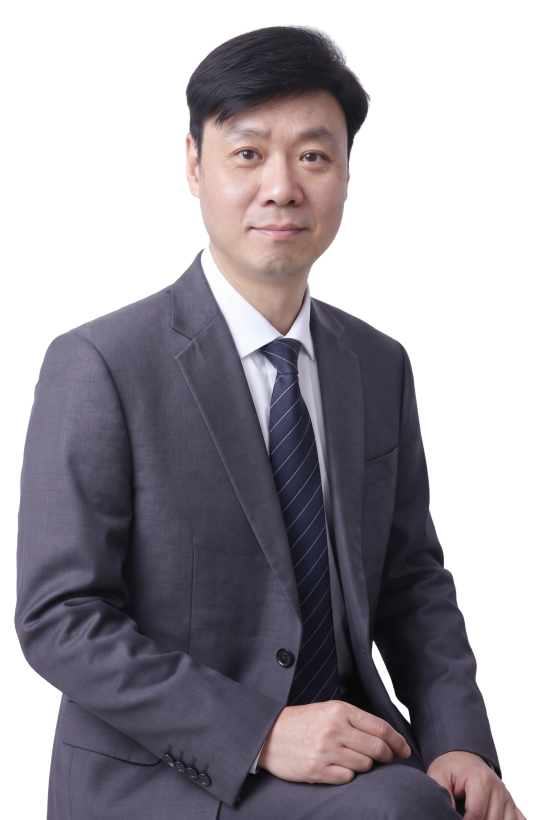

Thank U Plus.
오늘보다 나은 내일을 위하여

리더십 · 비즈니스 스킬 · 조직개발 교육 전문
땡큐플러스 허진호 대표입니다
기업과 공공기관 구성원을 대상으로 리더십, 비즈니스 스킬(업무성과), 조직개발·HRD를 강의합니다. 교육담당자 7년, 컨설턴트 5년, 강사 13년의 경험으로 현업을 이해하고, 고객사가 원하는 내용으로 과정을 맞춤 구성합니다.
약력
- 학력연세대학교 경영학과 학사
- 학력연세대학교 교육대학원 산업교육학 석사
- 2015.11 ~ 현재땡큐플러스 대표(소장)
- 2011.02 ~ 2015.10에이치앤피컴퍼니 교수전략 연구실장 · 강사
- 2009.12 ~ 2011.01하나카드 인사팀(HRD 파트) 차장
- 2005.09 ~ 2008.12신한카드 인재육성팀 차장
- 2002.11 ~ 2005.09엑스퍼트컨설팅 컨설팅본부 선임 컨설턴트
- 2000.02 ~ 2002.03롯데푸드 인사총무과 교육담당
M. 010-8975-6090|E. edupert2020@gmail.com
Strengths
강의의 특징
현업을 아는 강의
롯데푸드·신한카드·하나카드 교육담당자 7년, 엑스퍼트컨설팅·에이치앤피컴퍼니 컨설턴트 5년을 거쳐 13년째 기업교육 강사로 일하고 있습니다. 교육을 기획하고 운영하는 쪽의 고민을 압니다.
듣는 강의가 아닌 참여하는 강의
전달식 강의 대신 동영상, 흥미를 끄는 토론 주제, 게임과 실습으로 교육생이 스스로 생각하게 만듭니다.
고객사 맞춤 구성
대상과 조직의 니즈에 맞춰 2시간 특강부터 16시간 과정까지 모듈을 다시 짜서 제안합니다.
Areas
강의 분야
리더십
팀장 리더십예비 리더 리더십중간관리자 리더십셀프리더십팔로워십AI 시대의 리더십
비즈니스 스킬(업무성과)
기획력문제해결보고서 작성 및 보고업무관리 및 시간관리소통과 협업대인관계AI 활용 기획
조직개발 · HRD
핵심가치 공유조직활성화사내강사 양성
Track Record
대표 강의 이력
리더십
- 르노코리아 Leadership Development Program (CL2, 6차수, 2025)
- 삼기 중간관리자 브릿지 리더십 (3차수, 2024)
- 경신그룹 팀장 리더십 신임·심화 (2차수, 2026)
- 고려대학교·YBM 중간관리자 리더십 (2024~2025)
- 경찰청 중간관리자 리더십 과정 (총 15차수, 2020~2022)
- 건강보험심사평가원 넥스트 리더 과정 (총 13차수, 2011~2012)
- 삼성전자 변화리더 과정 (7차수, 2015)
- 현대로템 예비리더 과정 (총 6차수, 2019·2021)
- SPC그룹 예비팀장 과정 (5차수, 2017)
- 삼성디스플레이 LCD사업부 승격자 과정 (5차수, 2013)
- CJ텔레닉스 중간관리자 리더십 과정 (4차수, 2014)
비즈니스 스킬(업무성과)
- 코오롱베니트 문제해결·의사결정 과정 (총 12차수, 2024~2026)
- 국민건강보험공단 문제해결·워크스마트·보고서 작성 (총 9차수, 2024~2026)
- 건강보험심사평가원 기안문·기획보고서 작성 (6차수, 2024)
- 국토교통부 혁신적 사고와 문제해결 (5차수, 2024~2025)
- AI 활용 기획보고서 작성 — 롯데면세점·고려대학교·한국공항공사·한국능률협회 (2026)
- LS그룹 문제해결 과정 (탐색적·가치판단적·위기대응적, 총 49차수, 2019~2020)
- 현대자동차그룹 기획력 과정 개발 및 강의 (19차수, 2011~2012)
- LS그룹 기획력(정보분석·비즈니스 모델) 과정 (14차수, 2017~2018)
- 한국타이어 기획력 과정 (9차수, 2013~2015)
- 국가철도공단 기획력·보고서 작성 과정 (7차수, 2022~2023)
- 롯데카드 기획력 과정 (7차수, 2015~2018)
- 삼성전자 창의적 문제해결 과정 (6차수, 2014~2015)
- 삼성반도체연구소 시간관리 과정 (2016~2018)
조직개발 · HRD
- 도쿄일렉트론코리아 리더 역량평가(Succession Plan AC) (총 6차수, 2024·2026)
- 공공기관 승진·보직자 역량교육 및 평가 — 한전KPS·한국농어촌공사·한국국토정보공사·한국남동발전 (2024~2026)
- 경찰청 학교전담경찰관(SPO) 강의역량 향상 과정 (2차수, 2026)
- 커머스플래닛 전사원 소통활성화 과정 개발 및 강의 (13차수, 2012)
- 부산시 비전공감 과정 (11차수, 2016)
- 롯데로지스틱스 한마음 과정 (5차수, 2014)
- 현대엠엔소프트 전사원 한방향 정렬 과정 개발 및 강의 (4차수, 2014)
- 금융감독원 사내강사 양성 과정 (2011~2015, 총 5차수)
Clients
주요 출강처
기업
| 제조 (전자·반도체·디스플레이) | 삼성전자, 도쿄일렉트론코리아, 삼성디스플레이, 오토닉스, 동진쎄미켐, SK하이닉스, 세메스, 앰코테크놀로지코리아, LG이노텍, 한국단자공업, 에이텍, 덱세리얼즈코리아, DB하이텍, IMI, DIT, 해성DS, 팬택, 크루셀텍, 아진엑스텍, 솔브레인, 이녹스, 라온피플, 브라더인터내셔널코리아, 탑엔지니어링, 유비쿼스, 심텍, 위너스오토메이션, LX세미콘, 삼성전기, TKE 코리아, FST, 후지필름비즈니스이노베이션, 바이오센서 바이오노트, 에이디테크놀러지 |
|---|---|
| 제조 (자동차·기계·조선·방산) | 현대자동차그룹, 대우조선해양, 한국타이어, 르노코리아, 한라비스테온공조, DN솔루션즈, 현대로템, 삼기, STX, HD현대(현대중공업), 경신그룹, 유라코퍼레이션, 현대모비스, LS엠트론, 두올, 넥센 타이어, 한국항공우주산업(KAI), 세키스이카세이코리아, 쎄트렉아이, 한화에어로스페이스, 삼성탈레스, 아트라스BX, 현대엔지비, 현대케피코, SECO, 한영모터스, 볼보그룹코리아, 윤창기공, LS오토모티브, 콘티넨탈 오토모티브시스템, 엑셀리스코리아, LIG넥스원, 현대삼호중공업, 현대위아, 도루코, 현대씨앤알 |
| 제조 (화학·소재·철강·에너지) | LS그룹, 동국제강, GS칼텍스, 이수그룹, 한화첨단소재, 현대오일뱅크, KCC그룹, PI첨단소재, 도레이그룹, 금호석유화학, 유니드, 세아그룹, GS파워, 휴비스, 도레이첨단소재, 조선내화, SK F&U, 후성그룹, 노루페인트, GS E&R, 애경특수도료, 삼성정밀화학, 한솔 PNS 지류유통부문, OCI, 희성촉매, 태광실업, 고려아연, SKKOLONPI, 세창화학, 삼양홀딩스, 무림그룹, 세아제강, 한국유미코아, 현대제철, 에코프로, SK영남에너지서비스, 가온그룹 |
| 제조 (제약·바이오·식품·소비재) | 아모레퍼시픽, 한국콜마, 유한양행, 보령제약, 팜스코, 농심, 대상, 일동제약, 동국제약, SPC, 롯데삼강, 이브자리, 한화제약, 유한화학, 동아제약, 롯데칠성음료, 종근당, 남영비비안, 롯데제과, 코스메카코리아, 삼성물산 패션부문, 세아상역, 한국화이자제약, 셀트리온 헬스케어, 동원그룹, 롯데아사히주류, 도드람, 광동제약, 한국팜비오, 창신 Inc, 일동후디스, 동서식품, 태평양물산, 깨끗한나라, 제일모직, 한국야쿠르트, LF, 리홈쿠첸, 중외제약, 보령메디앙스, 진안홍삼연구소, 서흥, 애경, 미트뱅크, 에스앤지바이오텍, OB맥주, 해피프린스, 풍림푸드, 코스맥스, 한샘, 제이에스에이어패럴, 유영제약, 셀리드, 메디포스트, 하림그룹, 알콘 |
| IT·통신·미디어 | 코오롱베니트, 신한데이타시스템, KTis, 현대엠앤소프트, 네트웍오앤에스, YBM, 아시아나IDT, 다우기술, SK인포섹, 나이스정보통신, 솔트룩스, KT, 게티이미지, 디어포스, 슈어소프트테크, GS ITM, 현대오토에버, 농협정보시스템, 알서포트, 대원방송, 이노와이어리스, KT파워텔, 롯데정보통신(현대정보기술), 액토즈소프트, JCE, 한국정보공학, MarkAny, 현대유엔아이, 이엠넷, 로엔엔터테이먼트, 미래엔, 다우키움그룹, JNJ, 메가박스, 그린아이티코리아, 에스케이테크, 유플러스시스템, 지란지교에스앤씨, 다우데이타, 투비소프트, 아이시프트, 라온시큐어, 한국 CIM, 곰앤컴퍼니, NBP, 대원, 크래프톤, 드림씨아이에스, 세종텔레콤, 그룹레이어스, 지오멕스소프트, 현대 ISC |
| 금융 | 롯데카드, 미래에셋증권, BC카드, 더케이손해보험, 상상인그룹, NH투자증권, 에프앤유신용정보, 동부화재, 예다함, M캐피탈, 농협자산관리회사, 라이나손해보험, 신한아이타스, 한국스탠다드차타드은행, SK증권, 신한생명, SBI 저축은행, 신한은행, 부산은행, 우리금융캐피탈, HM투자증권, PB파트너즈, AIA생명, 현대캐피탈, KB증권 |
| 유통·서비스 | 에스원, 커머스플래닛, 서비스에이스, 이마트, 롯데쇼핑, 신세계푸드시스템, GS리테일, 롯데리아, SK네트웍스서비스, CJ텔레닉스, CJ오쇼핑, 아워홈, 홈앤쇼핑, 상록파크랜드, DK비즈니스, 투썸플레이스, 신세계, 88관광개발, 한화갤러리아, 피앤씨솔류션, 롯데면세점, 호텔신라, 테크팩솔루션, 쿠팡, kt커머스, 메가넥스트, 트라이씨클, OCI상사, 엘이비엔터프라이즈, GS엠비즈, 지지무역, 애플트리, 대명그룹, 나비엠알오, 스카우트, 엔테크서비스, 오피스디포코리아, 서브원, 엔투비 |
| 건설·물류·기타 | 금호아시아나, 롯데글로벌로지스, 대우건설, 동성그룹, 현대글로비스, 통일그룹, 도화엔지니어링, 우미건설, 한진, 다산컨설턴트, 파멕스, 현대건설, OJC, SK건설, KCTC, 에스디, 성화산업, 대보그룹, 고려산업, 부영, 대연, 대림코퍼레이션, 실론, 파인건설, 한국플랜트 관리, 한강그룹, 이케이, KBI그룹 |
공공기관 · 학교
| 공기업 | 한국농어촌공사, 한전KPS, 예금보험공사, 한국공항공사, 한국가스공사, 한국수력원자력, 한국방송광고진흥공사, 강원랜드, 한국남동발전, 한국지역난방공사, 대구도시개발공사, 한국전력거래소, 한국마사회, 한국도로공사, 한국해외인프라도시개발지원공사, 코레일, 한국국토정보공사(LX), 제주특별자치도개발공사, 경기도시공사, 대한석탄공사, JDC, 광물자원공사, 대구도시철도공사, 서울교통공사, 한국전기안전공사, 성남도시개발공사 |
|---|---|
| 공공기관 | 건강보험심사평가원, 국민건강보험공단, 금융감독원, 한국인터넷진흥원, 국민연금공단, 한국장애인고용공단, 한국소비자원, 한국교직원공제회, 국가철도공단, 한국산업인력공단, 한국국제교류재단, 국립중앙의료원, 한국건강가정진흥원, 한국보건복지정보개발원, 근로복지공단, 서울시설공단, 한국장애인개발원, 도로교통공단, KDB산업은행, 한국승강기안전공단, 한국노인인력개발원, 한국장학재단, 국방기술품질원, 동명기술공단, 국토안전관리원, 대한법률구조공단, 신용보증기금, 기술보증기금, 인천테크노파크, 한국장기조직기증원, 예술의 전당, 특허전략개발원, 예술경영지원센터, 한국교육시설안전원, 한국보육진흥원, 대한지방행정공제회, 축산물품질평가원, 한국원자력환경공단, 국가유산진흥원, 성남산업진흥원, 한국연구재단, 한국고용노동교육원, 수원문화재단, 중소기업진흥공단, 국립공원관리공단, 동반성장위원회, 국토정보교육원, 건설공제조합, 한국보건의료인국가시험원, 방송통신심의위원회, 한국국제협력단, 국립낙동강생물자원관, 항공안전기술원, 소상공인시장진흥공단, 한국콘텐츠진흥원, 한국저작권위원회, 한국산림복지진흥원, 한국생산기술연구원, 경기신용보증재단 |
| 정부·지자체 | 경찰청, 부산시, 국토교통부, 행정안전부, 지식경제공무원교육원, 화순군청, 서울시, 남양주시청, 기상청, 국립중앙도서관, 농식품공무원교육원, 중앙공무원교육원, 군산시청, 경기도인재개발원, 안전행정부, 오산시, 인천동구청, 충청남도농업기술원, 아산시청, 권선구청, 선거연수원, 도봉구청, 평창군, 광주시, 국가공무원인재개발원, 나주시, 의정부시, 중랑구청, 경상북도청, 기상기후인재개발원 |
| 학교·병원·기타 | 대한산업안전협회, 한국폴리텍대학, 씨젠의료재단, 고려대학교, 한국무역협회, 서울아산병원, 세종충남대학교병원, 인천상공회의소, 인천대학교, 경희대학교, 삼성서울병원, 안산대학교, 충남대학교병원, 인하항공직업전문학교, 대구한의대학교, 전국재해구호협회, 순천대학교, 고려대학교병원, 연암대학교, 한경국립대학교 |
History
연도별 강의 이력
연도를 누르면 그해 강의한 기업·기관과 과정을 볼 수 있습니다.
2026년
- DN솔루션즈 G2·S2 과정(업무관리·보고)
- IMI 신임팀장 과정
- 경신그룹 팀장 리더십(신임·심화)
- 경찰청 학교전담경찰관(SPO) 강의역량 향상과정
- 고려대학교 생성형 AI를 활용한 보고서 작성
- 국민건강보험공단 문제해결
- 다산컨설턴트 최고관리자 리더십(소통·협업·동기부여)
- 도쿄일렉트론코리아 역량평가
- 동국제강 보고서 작성 및 보고
- 롯데글로벌로지스 기안서·보고자료 작성 스킬
- 롯데면세점 AI를 활용한 기획보고서 작성
- 멀티캠퍼스 시니어 승진자 과정(패스트트랙)
- 세키스이카세이코리아 부서관리자 레벨업
- 쎄트렉아이 비즈니스 문서작성
- 예술경영지원센터 기획력
- 유한양행 기획력 및 보고서 작성
- 인천상공회의소 리더를 위한 AI 소통법
- 코오롱베니트 문제해결
- 투썸플레이스 차·부장 승격자 과정
- 파멕스 기획력 향상(퓨처로드 과정)
- 한국HRD교육센터 핵심인재 역량 고도화 과정
- 한국가스공사 기획보고서 작성
- 한국공항공사 AI 활용 보고서 작성
- 한국교육시설안전원 공문서 작성
- 한국국토정보공사(LX) 보직후보자 역량교육(퍼실리테이터)
- 한국남동발전 3직급 승진 기획능력평가(평가위원)
- 한국농어촌공사 역량교육(퍼실리테이터)
- 한국능률협회 공개과정 AI 활용 기획 및 기획서 작성 · AI로 더 빠른 원페이지 보고서 작성 · 일잘러의 AI 활용 기획 및 기획서 작성 · 일잘러의 원페이지 보고서 작성(with AI) · 일잘러의 업무관리 시스템(비대면)
- 한전KPS 신입 입문과정(비전레일)
2025년
- DIT 팀장 리더십
- DN솔루션즈 Role Change Program(직책 전환 과정)
- GS E&R 신임팀장 리더십
- KTis 차장 승진자 교육
- NH투자증권 기획력 향상 및 논리적 문제해결
- YBM 중간관리자 리더십
- 경찰청 SPO 팀장 역량 향상 과정 · 학교전담경찰관 강의역량 향상과정(강의실습)
- 고려대학교 중간관리자 리더십
- 국가유산진흥원 기획력 및 업무관리
- 국민건강보험공단 워크 스마트 · 문제해결 역량
- 국방기술품질원 임용후보자 피드백 과정
- 국토교통부 혁신적 사고와 문제해결
- 노루페인트 워크스마트
- 농협자산관리회사 설득력 있는 기안문 작성
- 대한지방행정공제회 보고력 개발(정보분석·기획보고서)
- 동명기술공단 업무관리와 시간관리
- 동서식품 문제해결
- 라이나손해보험 비즈니스 메일과 보고서 작성
- 르노코리아 Leadership Development Program(CL2 Non-people Leader)
- 삼성물산 패션부문 신입사원 보고서 작성
- 상상인그룹 승격자 교육(역할 인식·팀빌딩) · 리더의 조직관리와 성과관리
- 성남산업진흥원 중간관리자 교육
- 세메스 스마트워크(비대면)
- 우미건설 역할 인식 및 협업 역량 강화
- 인천대학교 문제해결
- 축산물품질평가원 DISC 진단·업무 시뮬레이션 스마트워크
- 코오롱베니트 문제해결 및 의사결정
- 투썸플레이스 승격자 과정(변화된 역할 인식·전략적 사고와 의사결정)
- 한국HRD교육센터 리더십(팀장 승진자·코칭 리더십)
- 한국가스공사 핵심가치 기반 셀프리더십·협업과 소통 리더십
- 한국공항공사 스마트워크 · 능동적 성과창출·문제해결력
- 한국보육진흥원 시니어 리더십
- 한국수력원자력 비전 제시 · 팔로워십 역량강화 · 셀프리더십(소통과 협업·커리어 로드맵)
- 한국원자력환경공단 보고서 작성·일하는 방식
- 한국장학재단 업무관리(세밀한 일처리)
- 한국지역난방공사 부서장 후보자 역량평가(집단토론)
- 한국콜마 생성형 AI로 확장하는 기획력
- 한전KPS 차장의 SMART 업무 프로세스 관리
- 해성DS 창의적 기획력
- 현대오일뱅크 기획적 사고와 업무성과
2024년
- DN솔루션즈 업무관리(워크스마트)
- KCC그룹 문제해결력 · 문제해결
- LS그룹 기획적 사고 및 신사업 기획
- OJC 중간관리자 리더십(Senior 승진자)
- PI첨단소재 기획력·문제해결·보고서 작성
- SPC 소통 리더십
- YBM 중간관리자 리더십
- 건강보험심사평가원 역량교육(기획보고서 작성·역할수행) · 기안문 작성
- 경찰청 중간관리자 리더십
- 경희대학교 미래지향적 전문관리자 역량 제고(기획력·보고서 작성)
- 국민건강보험공단 보고서 작성(공문서 바로 쓰기)
- 국민연금공단 보고서 작성
- 국토교통부 혁신적 사고와 문제해결
- 국토안전관리원 워크 스마트 · 중간관리자 레벨업
- 기상청 셀프리더십·업무관리(워크스마트)
- 깨끗한나라 업무관리(워크스마트)
- 나이스정보통신 업무관리(워크스마트)
- 대구도시개발공사 업무관리(워크스마트)·스마트 팔로워
- 대한산업안전협회 나를 성장시키는 업무 스킬(비즈니스 문서 작성) · 공통 리더십 강화
- 도레이그룹 신입사원 온보딩(경영마인드·경영 시뮬레이션)
- 도로교통공단 중간관리자 리더십
- 도쿄일렉트론코리아 리더급 역량평가 · 역량평가(Succession Plan AC)
- 동명기술공단 업무관리와 보고(시간관리)
- 부산시 소통을 위한 팀빌딩(공무원 노사관계과정)
- 삼기 중간관리자 리더십(브릿지 리더십)
- 세아상역 팀장 리더십
- 솔트룩스 리더십
- 아산시청 중간관리자 리더십
- 애경특수도료 보고서 작성
- 유라코퍼레이션 문제해결
- 유한화학 업무관리(워크스마트)
- 이노와이어리스 기획력
- 제주특별자치도개발공사 공문서 작성
- 충청남도농업기술원 팀장 리더십(수평 소통·코칭)
- 코오롱베니트 문제해결 및 의사결정 · 문제해결
- 태평양물산 신규입사자(경력직) 입문교육
- 한국HRD교육센터 업무관리(워크스마트) 공개과정
- 한국건강가정진흥원 업무관리·팀워크 구축
- 한국고용노동교육원 자기주도 리더십
- 한국공항공사 기획력·문제해결·기획보고서 작성
- 한국남동발전 스마트하게 일하기(워크스마트)
- 한국연구재단 신입직원 입문교육
- 한국장애인개발원 설득력 있는 보고서 작성법
- 한국전력거래소 보고서 작성 및 보고
- 한전KPS 역량교육(서류함·역할수행)
- 한화에어로스페이스 보고서 작성 및 보고
- 현대건설 보고 스킬·세대 소통
- 현대로템 창의적 문제해결
2023년
- BC카드 창의적문제해결,보고서 작성,보고
- DN솔루션즈 역할인식, 문제해결, 업무관리 · 업무관리, 보고
- GS리테일 사내강사 양성
- HD현대(현대중공업) 멘토링
- KB증권 팀장 리더십
- M캐피탈 문제해결
- PI첨단소재 기획력,문제해결,보고서 작성
- SK영남에너지서비스 창의적 사고, 일터에서 행복감 찾기
- YBM 중간관리자 리더십
- 가온그룹 코칭, 업무지시
- 강원랜드 역량교육(구두발표, 역할연기)
- 건강보험심사평가원 역량교육 (성과관리) · 역량교육 (집단토론, 구두발표)
- 경기신용보증재단 차세대 리더
- 경찰청 강사양성
- 국가철도공단 기획력, 보고서 작성, 보고
- 국민연금공단 업무관리(워크스마트) · 창의적 사고 · 예비관리자 리더십
- 국토교통부 문제해결
- 기상기후인재개발원 업무관리
- 기술보증기금 팀장 리더십
- 농협정보시스템 대인관계,업무관리
- 대구도시개발공사 슬기로운 직장생활,조직이해 및 핵심가치 내재화
- 대원방송 리더십 (코칭)
- 도레이그룹 문제해결
- 도로교통공단 조직과 개인성장
- 도쿄일렉트론코리아 역량평가(서류함 기법, 역할수행)
- 바이오센서 바이오노트 중간관리리더십 (부하육성과 동기부여)
- 성남도시개발공사
- 소상공인시장진흥공단 리더십,소통,업무관리
- 슈어소프트테크 소통과 협업
- 에이디테크놀러지 업무관리(워크스마트)
- 엔투비 리더십(코칭기반 성과관리)
- 우리들HRD 강사양성(업무관리, 보고서 작성,보고)
- 우미건설 커뮤니케이션
- 유한양행 기획력, 문제해결, 보고서 작성 · 기획력, 보고서 작성
- 코레일 강사양성
- 피앤씨솔류션 성과관리 리더십 · 커뮤니케이션, 문제해결
- 한경국립대학교 아이스브레이킹
- 한국HRD교육센터 업무관리 · 리더십(부하육성,성과관리)
- 한국건강가정진흥원 업무관리, 팀웍구축
- 한국산림복지진흥원 보고서 작성
- 한국생산기술연구원 역할과 책임, 커뮤니케이션, 기획력
- 한국장애인개발원 강사양성
- 한국저작권위원회 강사양성
- 한국전력거래소 기획력,보고서 작성
- 한국지역난방공사 중간관리자 리더십
- 한국콘텐츠진흥원 리더십(소통)
- 한국항공우주산업(KAI) 커뮤니케이션,강점찾기,기획력
- 한전KPS 업무관리, 커뮤니케이션
- 한화첨단소재 기획력
- 항공안전기술원 업무관리
- 현대 ISC 중간관리자 리더십
- 현대씨앤알 팀장 리더십(코칭)
- 후성그룹 업무관리
2022년
- BC카드 보고서 작성 · 문제해결, 보고서 작성
- DB하이텍 보고서 작성, 보고
- FST 리더십(변화관리)
- KBI그룹 보고
- M캐피탈 리더십, 팔로워십
- 건강보험심사평가원 역량교육 (기획보고서작성, 역할연기)
- 경상북도청 역량교육 (구두발표, 역할수행, 서류함)
- 경찰청 중간관리자 리더십
- 국가철도공단 기획력, 보고서 작성
- 국립낙동강생물자원관 전략적 사고
- 국민건강보험공단 팀장 리더십
- 국민연금공단 업무관리(워크스마트) · 창의적 사고
- 농협정보시스템 셀프리더십
- 대원방송 팀장 리더십
- 도루코 문제해결
- 삼성전자 업무관리
- 서브원 기획력
- 서울시설공단 커뮤니케이션 · 기획력 · 핵심가치 내재화
- 세메스 보고서 작성
- 세종충남대학교병원 핵심가치 내재화 · 대인관계, 소통
- 알서포트 커뮤니케이션, 문제해결 · 중간관리자 리더십
- 알콘 조직활성화 (로보텍)
- 예술의 전당 중간관리자 리더십
- 오피스디포코리아 팀장 리더십
- 유한화학 기획력, 업무관리
- 이케이 기획력,보고서 작성
- 인천동구청 소통
- 종근당 창의적 문제해결
- 지오멕스소프트 문제해결
- 특허전략개발원 업무관리(워크스마트)
- 한국무역협회 리더십 (협업) · 팀웍개발과 갈등관리
- 한국인터넷진흥원 기획력 · 가치공유, 대인관계
- 한국해외인프라도시개발지원공사 대인관계, 소통
- 한화제약 멘토링
- 현대글로비스 기획력
- 현대오토에버 창의적 사고
- 현대위아 멘토링
- 현대자동차그룹 협업
- 현대캐피탈 창의적문제해결, 업무관리,보고서 작성,보고
- 후지필름비즈니스이노베이션 변화와 혁신 W/S
2021년
- AIA생명 강사양성
- GS ITM 신입사원 자세
- HM투자증권 업무관리,보고,경력개발
- LIG넥스원 의사결정 및 판단력
- LS그룹 SLP 과장 과정 오프닝 · 업무관리(워크스마트) · 경력개발 · 비즈니스 모델 · 예비리더 리더십(협업)
- LX세미콘 팀장 리더십
- NH투자증권 업무관리,보고,경력개발
- PB파트너즈 전략적 사고, 의사결정
- TKE 코리아 보고서 작성
- 건강보험심사평가원 역량교육 (기획보고서작성, 역할연기)
- 경찰청 중간관리자 리더십
- 그룹레이어스 셀프리더십, 업무관리
- 대상 기획력
- 대한산업안전협회 팀장 리더십 · 강사양성
- 도화엔지니어링 업무관리(워크스마트) · 전략적 사고
- 드림씨아이에스 전략적 사고, 의사결정
- 삼성전기 중간관리자 리더십
- 삼성전자 리더십(부하육성 및 코칭, 미래경영자 리더십) · 업무관리
- 서울시설공단 문제해결
- 세종텔레콤 업무관리
- 에코프로 전략적 사고, 문제해결
- 연암대학교 업무관리(워크스마트)
- 우리금융캐피탈 중간관리자 리더십
- 유한양행 보고서 작성
- 인천테크노파크 문제해결
- 일동제약 보고서 작성
- 일동후디스 문제해결 · 팀장 리더십
- 코레일 팀장 리더십
- 파인건설 멘토링
- 하림그룹 리더십(변화관리,성과관리)
- 한강그룹 조직문화
- 한국교직원공제회 문제해결 · 기획력
- 한국국제협력단 업무관리
- 한국노인인력개발원 커뮤니케이션
- 한국장애인개발원 강사양성
- 한국플랜트 관리 조직활성화
- 한화제약 업무관리,보고 · 문제해결 · 리더십(직원육성 및 코칭)
- 현대로템 예비리더 리더십(코칭 리더십)
- 현대삼호중공업 셀프리더십
- 현대오일뱅크 커뮤니케이션
2020년
- DB하이텍 업무관리(워크스마트)
- GS ITM 신입사원 자세, 조직활성화
- HD현대(현대중공업) 경영시뮬레이션
- LS그룹 SLP 과장 과정 클로징 · 문제해결(탐색적 문제해결) · 문제해결(가치판단적 문제해결) · 문제해결(위기대응적 문제해결) · SLP 대리 과정 클로징
- 건강보험심사평가원 역량교육 (기획보고서작성, 역할연기)
- 경찰청 중간관리자 리더십
- 고려대학교병원 조직활성화
- 대상 기획력
- 대우조선해양 문제해결
- 메디포스트 정보수집 분석, 시스템적 사고
- 부산은행 셀프리더십
- 삼성전자 전략적 사고, 기획력 (미래경영자 리더십) · 소통과 협업
- 셀리드 중간관리자 리더십
- 순천대학교 중간관리자 리더십
- 실론 기획력(전략적사고, 기획력)
- 아모레퍼시픽 역할과 역량 재인식, 커뮤니케이션,업무수행
- 아워홈 기획력
- 엑셀리스코리아 문제해결
- 위너스오토메이션 예비 리더 리더십
- 유한양행 업무관리(워크스마트)
- 중랑구청 업무관리
- 크래프톤 창의적 문제해결
- 한국노인인력개발원 대인관계 (관계관리)
- 한국방송광고진흥공사 보고서 작성,보고
- 한국인터넷진흥원 소통과 협업 · 셀프리더십 · 업무관리,보고서 작성, 보고
- 한국전기안전공사 업무관리
- 휴비스 시간관리
2019년
- DK비즈니스 팀장 리더십 · 예비리더 리더십
- GS리테일 문제해결
- HD현대(현대중공업) 경영시뮬레이션
- LS그룹 신임대리 승진자 · 신임대리 오프닝 · 신임과장 승진자 · SLP 대리 과정 오프닝 · SLP 과장 과정 클로징 · 문제해결(탐색적 문제해결) · 문제해결(가치판단적 문제해결) · 문제해결(위기대응적 문제해결) · SLP 대리 과정 클로징
- NBP 기획력
- SK F&U 보고서 작성
- SK하이닉스 기획력 (전략과 사고와 기획력)
- 게티이미지 리더십
- 곰앤컴퍼니 예비 리더 리더십
- 광동제약 시간관리
- 나비엠알오 중간관리자 리더십
- 넥센 타이어 소통과 협업
- 농심 업무네트워킹, 개선마인드 (리더십 역량개발)
- 대상 기획력
- 대원 셀프리더십
- 도화엔지니어링 셀프리더십(승진자 과정)
- 동진쎄미켐 경영시뮬레이션
- 두올 팀장 리더십
- 라온시큐어 셀프리더십(승진자 과정)
- 삼성전자 팀장 리더십 · 중간관리자 리더십 · 소통(EDC 과정) · 대인관계
- 세아제강 대인관계, 커뮤니케이션
- 슈어소프트테크 보고서 작성, 보고
- 스카우트 문제해결
- 신한데이타시스템 경력사원 입문
- 심텍 창의적문제해결
- 씨젠의료재단 문제해결
- 아모레퍼시픽 역할과 역량 재인식, 커뮤니케이션,업무수행
- 아워홈 기획력
- 아이시프트 조직활성화 (행복한 직장생활)
- 엔테크서비스 커뮤니케이션(비즈니스 소통)
- 오토닉스 경력사원 입문
- 유니드 셀프리더십(승진자 과정)
- 유비쿼스 기획력,문서작성,업무관리
- 유영제약 업무지시,보고
- 인천테크노파크 기획력
- 전국재해구호협회 조직활성화
- 제이에스에이어패럴 문제해결
- 조선내화 셀프리더십,문제해결
- 창신 Inc 현장관리자 리더십 · 기획력,보고서 작성
- 코스맥스 셀프리더십(승진자 과정)
- 코오롱베니트 업무관리
- 탑엔지니어링 보고서 작성, 보고
- 한국 CIM 셀프리더십, 업무관리,보고
- 한국교직원공제회 기획력, 보고서 작성
- 한국도로공사 셀프리더십 · 기획력, 보고서 작성
- 한국무역협회 보고서 작성, 보고
- 한국방송광고진흥공사 창의적 사고, 보고서 작성
- 한국유미코아 중간관리자 리더십
- 한국장기조직기증원 조직활성화
- 한국팜비오 셀프리더십
- 한국해외인프라도시개발지원공사 대인관계
- 한샘 기획력
- 현대로템 예비리더 리더십(코칭 리더십)
- 현대제철 문제해결,보고서작성
2018년
- CJ오쇼핑 업무관리(워크스마트)
- DK비즈니스 문제해결
- GS리테일 팀웍개발 · 문제해결
- GS칼텍스 멘토링
- LS그룹 신임대리 승진자(1일차) · 신임대리 승진자(2일차) · 신임과장 승진자 · SLP 대리 과정 오프닝 · 정보분석자 (SLP 대리) · SLP 과장 과정 오프닝 · 업무전문가(SLP 과장)
- LS오토모티브 중간관리자 리더십
- OB맥주 사내강사 양성
- SK네트웍스서비스 변화관리 (변화캠프)
- SK인포섹 셀프리더십
- SK하이닉스 정글탐험 시뮬레이션 · 셀프리더십 (행복한 나 만들기)
- SPC 중간관리자 리더십(동기부여)
- STX 협업
- 건강보험심사평가원 업무관리
- 게티이미지 조직문화 리더십
- 광동제약 시간관리
- 농심 업무네트워킹, 개선마인드 (리더십 역량개발)
- 다우데이타 커뮤니케이션
- 대구한의대학교 셀프리더십,커뮤니케이션,창의적사고,대인관계
- 대림코퍼레이션 중간관리자 리더십(소통과 협업)
- 대명그룹 기획력
- 대상 기획력
- 더케이손해보험 사내강사 양성 · 비전레일, 업무관리
- 덱세리얼즈코리아 중간관리자 리더십 · 셀프리더십
- 동진쎄미켐 역할인식과 자기관리
- 두올 핵심가치 실천
- 디어포스 중간관리자 리더십 · 조직활성화
- 라온피플 팀장 리더십
- 롯데카드 기획력
- 무림그룹 보고서 작성
- 방송통신심의위원회 커뮤니케이션(세대공감)
- 브라더인터내셔널코리아 프리젠테이션
- 삼성전자 협업 · 시간관리
- 삼양홀딩스 핵심가치 공유
- 서울시 셀프리더십 · 팀 빌딩
- 신한데이타시스템 경력사원 입문과정
- 아모레퍼시픽 역할과 역량 재인식, 커뮤니케이션,업무수행
- 아워홈 업무관리
- 애플트리 조직활성화
- 오산시 비전공유
- 오토닉스 신입사원의 역할인식, 셀프리더십 · 대인관계, 커뮤니케이션
- 유플러스시스템 조직활성화
- 윤창기공 조직활성화 (소통과 협업)
- 이브자리 승진자의 역할과 책임, 전략적 의사결정
- 이수그룹 멘토링 · 기획력 · 보고서 작성
- 조선내화 도전과 협업
- 지란지교에스앤씨 조직활성화
- 코스메카코리아 문제해결 · 팀빌딩, 업무관리 · 신입사원 역할인식, 업무관리
- 콘티넨탈 오토모티브시스템 프리젠테이션
- 투비소프트 팀장 리더십
- 풍림푸드 업무관리, 보고서 작성, 팀빌딩
- 한국교직원공제회 기획력, 보고서 작성
- 한국마사회 기획력
- 한국보건의료인국가시험원 셀프리더십, 문제해결,보고서 작성
- 한국인터넷진흥원 팀빌딩 · 업무관리
- 한국장애인고용공단 전문강사 역량평가
- 한국팜비오 신입사원의 역할과 자세, 업무관리, 대인관계
- 해피프린스 팀장 리더십
- 현대모비스 경영시뮬레이션
2017년
- CJ오쇼핑 보고서 작성
- GS엠비즈 기획력, 보고서작성
- JNJ 업무관리
- LS그룹 대리 · 과장 · 신임대리 승진자 · 신임과장 승진자 · 정보분석자 (SLP 대리) · 신임대리 · 신임과장 · SLP 과정 오프닝
- SK인포섹 보고서 작성
- SPC 예비팀장 과정
- STX 소통과 협업, 창의적 문제해결
- 건강보험심사평가원 업무관리
- 건설공제조합 변화혁신 W/S
- 고려산업 중간관리자 리더십
- 광물자원공사 전략적 사고
- 광주시 창의적 문제해결
- 국가공무원인재개발원 변화와 혁신, 창의성
- 그린아이티코리아 팀장 리더십
- 근로복지공단 신입사원 역할과 책임, 창의적 문제해결
- 나주시 공직자 리더십
- 네트웍오앤에스 매니저 리더십 (자기관리, 업무관리, 관계관리
- 농심 업무네트워킹, 개선마인드 (리더십 역량개발)
- 다우기술 승진자의 역할인식, 문제해결 · F/U 세미나 (현업실천 과제 공유 및 피드백)
- 다우키움그룹 신입사원 역할과 재세, 업무보고
- 대구도시철도공사 팀장 리더십
- 대상 기획력
- 대연 즐거운 일터 만들기
- 대우건설 콜럼버스 시뮬레이션
- 더케이손해보험 사내강사 양성
- 도드람 셀프 리더섭 · 협업 리더십
- 도레이첨단소재 기획력
- 동국제강 업무관리 (워크스마트) · 변화혁신 , 성과창출 리더십
- 롯데카드 기획력
- 메가박스 비전과 핵심가치 공유
- 미트뱅크 셀프 리더십
- 볼보그룹코리아 업무관리 (워크스마트)
- 부산시 부산시 비전공감
- 부영 문제해결
- 삼성전자 Time Management 교육
- 상록파크랜드 셀프 리더십, 팔로워십
- 서울교통공사 사내강사 양성
- 서흥 의사결정, 문제해결
- 세창화학 변화와 혁신
- 솔브레인 중간관리자 역할, 관계형성, 영향력 발휘
- 신한데이타시스템 경력사원 입문과정
- 신한은행 업무관리 (워크스마트)
- 아모레퍼시픽 역할과 역량 재인식, 커뮤니케이션,업무수행
- 아진엑스텍 중간관리자 역할, 변화와 혁신, 기획력
- 애경 문제해결
- 에스앤지바이오텍 조직활성화(즐거운 일터, 협업)
- 에스케이테크 조직활성화(즐거운 일터, 협업)
- 엘이비엔터프라이즈 소통과 협업 (관리자 리더십)
- 오산시 협업리더 (중급 리더 과정)
- 오토닉스 기획력, 문제해결
- 의정부시 기획력
- 이녹스 셀프 리더(혁신마인드,관계형성,영향력 발휘)
- 이브자리 승진자의 역할과 책임, 전략적 의사결정
- 이수그룹 기획력, 보고서 작성
- 인하항공직업전문학교 소통과 협업
- 일동제약 문제해결
- 지지무역 기획력
- 충남대학교병원 기획력 향상
- 컴파트너스 문제해결, 협업
- 평창군 비전 달성 핵심가치 내재화
- 한국국제교류재단 업무관리
- 한국농어촌공사 기획력 (사업 관련 아이디어 발굴)
- 한국장애인고용공단 사내강사 양성
- 한영모터스 중간관리자 역할, 갈등관리
- 한전KPS 셀프 리더섭, 창의적 문제해결
2016년
- CJ오쇼핑 신입사원 입문교육(문서작성) · 신입사원 입문교육(기획력)
- GS칼텍스 멘토링 교육
- GS파워 중간관리자 리더십(소통과 협업 교육)
- JDC 신입사원 입문교육(문서작성)
- KDB산업은행 신입사원 입문교육(셀프리더십)
- LS그룹 정보분석자 교육
- OCI상사 신입사원 입문교육
- SBI 저축은행 승진자 교육
- SECO 팀 시너지 향상 과정
- SKKOLONPI 신입사원 입문교육
- SK네트웍스서비스 신입사원 입문교육 1차(창의적 문제해결) · 신입사원 입문교육 2차(창의적 문제해결)
- STX 승진자 교육
- 건강보험심사평가원 승진자 교육 1차 (창의적 문제해결) · 승진자 교육 2차 (창의적 문제해결) · 승진자 교육 3차 (창의적 문제해결) · 승진자 교육 4차 (창의적 문제해결) · 승진자 교육(효율적 업무관리)
- 고려아연 신입사원 입문교육
- 국토정보교육원 창의적 문제해결
- 근로복지공단 신입사원 입문교육(팀 빌딩) · 사내강사 양성 교육
- 남양주시청 공감맞춤 시정 교육
- 네트웍오앤에스 신입사원 입문교육(대인관계)
- 농심 리더십 역량 향상 교육
- 대우건설 부장 승진자 교육
- 더케이손해보험 신입사원 입문교육(셀프리더십)
- 도레이첨단소재 신입사원 입문교육(문서작성)
- 동국제약 승진자교육
- 동반성장위원회 창의적 문제해결
- 동성그룹 문서작성 교육 · 팀장 교육(문서작성 교육)
- 동진쎄미켐 신입사원 입문교육
- 롯데리아 신입사원 입문교육(효율적 업무관리)
- 롯데카드 신입사원 입문교육(기획력)
- 미래엔 신입사원 입문교육
- 보령메디앙스 신입사원 입문교육(셀프리더십)
- 부산시 부산시 비전공감 교육(신규) · 부산시 비전공감 교육(재직자)
- 삼성전자 삼성전자 디딤돌 교육 · Time Management 교육
- 서울아산병원 팀 시너지 향상 과정
- 신한데이타시스템 경력사원 입문교육(변화관리) · 신입사원 입문교육(셀프 리더십)
- 씨젠의료재단 기획력 향상 기본교육 · 기획력 향상 심화교육
- 아워홈 차장 승진자 교육
- 안산대학교 기업경영시뮬레이션 교육
- 오토닉스 신입사원 입문교육(셀프리더십)
- 이브자리 승진자교육(효율적 업무관리)
- 진안홍삼연구소 팀 빌딩 교육
- 컴파트너스 승진자 교육(팔로워십) · 팀장 리더십 교육(협업)
- 크루셀텍 중간관리자 리더십(소통과 협업 교육)
- 통일그룹 승진자 교육
- 한국농어촌공사 신입사원 입문교육 1차(창의적 문제해결)
- 한국산학연합회 창의적 교수법
- 한국승강기안전공단 조직융합 교육
- 한국화이자제약 전략적 의사결정
- 현대케피코 워킹그룹장 리더십 교육
- 휴비스 신입사원 입문교육(문서작성)
2015년
- BC카드 비즈니스문서작성
- GS파워 커뮤니케이션
- KDB산업은행 신입행원 셀프리더십 · 업무관리
- MarkAny 성공마인드 강화과정(SBT)
- kt커머스 문제해결능력 강화
- 국립중앙의료원 신규입사자교육(조직의이해,팀웍강화)
- 국토교통부 셀프리더 역량 강화
- 근로복지공단 신규임용자 입문교육(기획력)
- 금융감독원 전문강사 양성과정
- 기술보증기금 창의적 문제해결
- 남영비비안 신입사원 입문교육(셀프리더십, 커뮤니케이션)
- 네트웍오앤에스 문제 의식과 해결 · 셀프리더십(1차) · 셀프리더십(2차)
- 대보그룹 신입사원 입문교육(문서작성 및 프리젠테이션)
- 대우조선해양 커뮤니케이션
- 동국제약 프로페셔널리더십과 창의사고 · 승진자 과정
- 동부화재 직급별 역량 향상(프리젠테이션)
- 로엔엔터테이먼트 핵심인재 육성과정(일하는 방식)
- 롯데리아 업무관리 · 신입사원 입문교육(효율적 업무관리)
- 롯데제과 기획력2일차 · 기획력 향상 · 문서작성 향상
- 롯데카드 신입사원 입문교육(기획력)
- 리홈쿠첸 창의적 문제해결
- 메가넥스트 전수교육
- 미래에셋증권 보고서작성 · 비즈니스커뮤니케이션 스킬 · 문서작성
- 삼성전자 창의적 문제해결 · TLC 변화리더 특강
- 성화산업 신입사원 입문교육(프리젠테이션)
- 신한데이타시스템 CA과정
- 신한생명 창의적 문제해결과정
- 에스디 보고서작성과정
- 에이텍 기획력
- 예금보험공사 PT스킬 · 취업역량강화교육(프리젠테이션)
- 이엠넷 비전수립과정
- 중외제약 변화혁신마인드
- 코오롱베니트 공통역량교육(기획-문서-PT스킬)
- 태광실업 신입사원 입문교육(비즈니스 커뮤니케이션)
- 통일그룹 승진자 교육
- 트라이씨클 신입사원 입문교육(창의적 문제해결)
- 한국교직원공제회 신입사원 입문교육(문서작성)
- 한국승강기안전공단 팀웍개발을 통한 갈등관리
- 한국장애인고용공단 과장 승진자 교육
- 한국타이어 기획력
- 한국폴리텍대학 새로운 출발 비전수립 · 기획문서작성
- 한라비스테온공조 커뮤니케이션
- 한진 팔로워십과 셀프리더십
- 현대엠앤소프트 문서작성과정
- 현대유엔아이 기획력(보고서) 향상 과정
- 희성촉매 비즈니스매너
2014년
- CJ텔레닉스 파트리더 코칭 과정
- KTis cs강사 양성 과정 · 신입사원 소통과정
- LF 신입사원 비즈니스커뮤니케이션 스킬
- SK증권 문제해결과정
- 경기도인재개발원 소통의 리더십 과정(적극적경청과 자신감있는 Speech)
- 국립중앙의료원 신규입사자교육(조직의이해,팀웍강화)
- 금융감독원 2차 강사멘토링 · 강사스킬과정
- 금호아시아나 셀프리더십
- 남영비비안 프리젠테이션스킬
- 대우조선해양 커뮤니케이션
- 대한석탄공사 계층별 리더십 교육
- 도봉구청 신입사원입문교육
- 동국제약 승진자교육
- 동부화재 프리젠테이션 Clinic
- 롯데글로벌로지스 한마음교육(긍정,협력) 1차수 · 한마음교육(긍정,협력) 3차수 · 한마음교육(긍정,협력) 8차수 · 한마음교육(긍정,협력) 10차수 · 한마음교육(긍정,협력) 12차수
- 롯데리아 신입사원 입문과정 · 시간관리기법 · 시간관리
- 삼성전자 창의적 문제해결 · 협업&커뮤니케이션
- 서비스에이스 문제해결 · 창의사고 향상과정(1차수) · 창의사고 향상과정(2차수)
- 신한데이타시스템 경력사원 입문교육(변화관리) · 신입사원 입문교육(셀프 리더십)
- 안전행정부 기능인재 견습직원 워크샵
- 에이치앤피컴퍼니 우편원격교육과정
- 에이텍 신입사원 셀프리더십
- 예다함 2014 조직활성화 과정(1차) · 2014 조직활성화 과정(2차)
- 이브자리 승진자
- 일동제약 기술,기능직 승진자 과정
- 지식경제공무원교육원 6급 승진자 과정(조직활성화)
- 코오롱베니트 비전수립 · 세일즈PT스킬
- 쿠팡 캠프매니저 Follow-up교육(리더십기본+소통스킬)
- 테크팩솔루션 사내강사양성과정
- 통일그룹 신입사원 입문과정
- 팜스코 팀장 역량 향상 과정 · 사원 역량 향상 과정
- 한국교직원공제회 신입사원입문교육
- 한국마사회 지사전직원역량향상
- 한국콜마 문제해결
- 한국타이어 기획력과정
- 한국폴리텍대학 사무직원 4급 역량교육(창의적 문제해결)
- 한진 신입사원 비전설계
- 한화갤러리아 기획력향상과정
- 현대엔지비 교육운영자 SKill향상과정
- 현대엠앤소프트 전직원 교육 · 전직원교육
- 현대자동차그룹 바람직한 협력사 업무대응
2013년
- 88관광개발 88CC 전직원 역량강화 교육
- GS리테일 부점장 코칭 과정
- KCTC KCTC KTLP과정(부산)
- KTis 현장리딩그룹교육
- OCI 효과적인 커뮤니케이션
- SK네트웍스서비스 주임/대리 승진자 과정 -
- 경기도시공사 사내강사 역량향상 교육
- 국립공원관리공단 신규입사자교육(조직의이해,팀웍강화)
- 국립중앙도서관 신입직원 입문과정(PT)
- 국립중앙의료원 신규입사자교육(조직의이해,팀웍강화)
- 국민건강보험공단 신입직원 입문과정(대인관계 형성 스킬) · 4급 승진자 과정 · 3급 승진자 과정(효과적인 프리젠테이션)
- 군산시청 보건복지인력 역량강화 과정 · 직급별 핵심역량 강화교육(8급이하 과정)
- 금융감독원 강의스킬 과정 · 강사스킬과정 · 스타강사양성과정 · 강사 멘토링
- 금호아시아나 기획력
- 다우기술 직급필수역량 강화교육
- 대우조선해양 커뮤니케이션스킬 · 커뮤니케이션 · 워크스마트
- 롯데쇼핑 사내강사 양성과정(1차수) · 사내강사 양성과정(2차수) · 사내강사 양성과정(3차수)
- 롯데아사히주류 문제해결 · 시간관리
- 삼성디스플레이 LCD사업부 승격자교육 2급
- 삼성서울병원 신입사원 Followership 과정
- 삼성전자새마을금고 승격자 교육
- 삼성탈레스 특강
- 서비스에이스 즐거운 일터 · 매니저 기획력 과정
- 세아그룹 신입사원 입문교육 · 업무관리
- 수원문화재단 2013 수원문화재단 사무직직원 워크숍
- 신용보증기금 설득협상스킬
- 아트라스BX 통합적 기획력 과정
- 에스원 에스원 구로지사 워크샵 · 에스원 서초지사 워크샵 · 에스원 프로젝트 · 지사컨설팅 · 에스원프로젝트 · 지사워크샵 · P20컨설팅 최종보고
- 에이치앤피컴퍼니 2013년 제2회 교육담당자 역량향상 공개과정
- 예금보험공사 신입사원 입문교육(커뮤니케이션 스킬)
- 일동제약 기술,기능직급 승진자 과정 · 주임승진자과정
- 중소기업진흥공단 신입사원 입문과정(신입사원 프론티어십)
- 중앙공무원교육원 신임사무관 이심전심 소통의 리더십 과정
- 지식경제공무원교육원 6급 승진자 과정
- 코오롱베니트 중간관리자 역량과정
- 한국가스공사 신입사원입문과정(조직의 이해와 역할인식)
- 한국국제교류재단 직무역량 강화과정 · KF 공통역량 강화 교육
- 한국농어촌공사 농어촌전문강사 양성과정
- 한국산업인력공단 PT스킬과정
- 한국스탠다드차타드은행 시간관리
- 한국장애인고용공단 행정지원직 직원 역량강화교육(기획력)
- 한국정보공학 전직원 Group Dynamics
- 한국타이어 기획력 과정
- 한국폴리텍대학 PT향상 스킬
- 한라비스테온공조 시니어 기본역량 과정1(소통) · 시니어 기본역량 과정2(소통)
- 한솔 PNS 지류유통부문 소통
- 현대글로비스 경력사원 입문과정
- 현대자동차그룹 협력사 업무대응 교육 · 협력사 업무 대응 교육
- 화순군청 역량중심 능력개발 강화과정 · 하반기 직원 의식 변화 교육(1) · 하반기 직원 의식 변화 교육(2) · 하반기 직원 의식 변화 교육(6)
2012년
- 88관광개발 셀프리더십과 고객 창의 과정
- JCE 신입사원 입문과정(열정패키지)
- KT 셀프 리더십
- KTis 현장 리딩 그룹 역량 강화
- LG이노텍 신입사원 입문과정(창의적 문제해결) · 신입사원 입문교육(기획력 향상)
- LS엠트론 세일즈 프리젠테이션
- SK건설 신입사원 PT스킬 과정
- 건강보험심사평가원 넥스트 리더 1차(창의) · 넥스트 리더 2차(창의) · 넥스트 리더 3차(창의) · 넥스트 리더 9차(창의) · 넥스트 리더 11차(창의)
- 국립중앙도서관 신입사원입문과정(신입사원의 역할과 자세)
- 국민건강보험공단 3급(차장) 승진자 과정 · 5급 승진자 과정
- 권선구청 소통2012 교육과정
- 금융감독원 사내강사양성 기본과정
- 금호아시아나 사원 Follow-up 과정 · 사원follow up 과정 · 전략 + 기획력 (k2승격 후보자 과정)-
- 남영비비안 셀프리더십&커뮤니케이션
- 농식품공무원교육원 인문학을 통한 창의소통 리더십 과정1- · 인문학을 통한 창의소통 리더십 과정2-
- 대한법률구조공단 신입직원입문과정(프로직장인/그룹다이나믹)
- 동원그룹 신임대리과정(기획력, 업무관리)
- 롯데삼강 영업사원 과정
- 롯데쇼핑 PMI(변화관리) 교육 · PMI(변화관리)교육
- 롯데정보통신(현대정보기술) 신입사원 비즈니스 스킬1-4(기획력)
- 보령제약 기획력과 문제해결능력
- 삼성전자새마을금고 승격자 교육
- 삼성정밀화학 보고서작성
- 선거연수원 프리젠테이션 스킬 향상 과정
- 셀트리온 헬스케어 신입사원 입문과정(기획력) · 신입사원 입문교육(기획력)
- 신용보증기금 소통리더십
- 액토즈소프트 Junior 역량 향상 과정
- 앰코테크놀로지코리아 사내강사 양성과정 · 대졸 신입사원 교육(기획력 향상 및 문서작성)
- 에이치앤피컴퍼니 HRD담당자역량향상과정
- 에프앤유신용정보 실장 Care 리더십 과정
- 예금보험공사 신입사원 입문교육(역할과 자세) · 4급 승진자 과정(역할,팀웍,소통,갈등관리)
- 중앙공무원교육원 5급 신임 사무관 팀웍 강화과정
- 지식경제공무원교육원 6급승진후보자과정
- 커머스플래닛 우분투 팀웍 과정
- 팜스코 신입사원 비즈니스 스킬
- 팬택 신입사원 입문교육(기획력)
- 한국국제교류재단 직무교육(기획력 향상과정)
- 한국농어촌공사 차장급관리자 역량강화교육 · 사내강사양성과정 · 신입직원 교육(Group Dynamics)
- 한국단자공업 리더십
- 한국방송광고진흥공사 기획력
- 한국보건복지정보개발원 문서작성 (1, 2기) · 문서작성 (3, 4기) · 문서작성 (5기)
- 한국산업인력공단 PT스킬 과정 · 커뮤니케이션 및 보고피드백
- 한국소비자원 프리젠테이션과정 · 사내강사 양성과정
- 한국장애인고용공단 신입사원 입문교육
- 한국콜마 문제해결
- 한라비스테온공조 시니어 기본역량 과정1(소통) · 시니어 기본역량 과정2(소통)
- 행정안전부 과단위 컨설팅형 교육(미래정보화과 1) · 과단위 컨설팅형 교육(상훈담당관실 1) · 과단위 컨설팅형 교육(지방세과 2) · 과단위 컨설팅형 교육(인사정책과 2)
- 현대모비스 프리젠테이션 클리닉
- 현대자동차그룹 기획력
- 홈앤쇼핑 사내강사과정
2011년
- KT 프로젝트 워크샵
- KTis R
- KT파워텔 신입사원입문과정
- 건강보험심사평가원 넥스트 리더 · 매니저
- 금융감독원 사내강사양성과정 · 사내강사 양성과정(평가)
- 금호석유화학 팀웍개발(과장 승격자 과정)
- 금호아시아나 문제해결
- 동아제약 조직활성화
- 러닝하우스 문제해결
- 롯데삼강 문제해결과정
- 롯데칠성음료 협상스킬
- 보령제약 프리젠테이션 · 프리젠테이션 과정 · 신입사원 프리젠테이션 과정
- 신세계 협상과정1- · 협상과정2-
- 신세계푸드시스템 셀프리더십 과정
- 신한아이타스 신입사원 입문과정
- 아시아나IDT 열정과 혁신(조직활성화)
- 예금보험공사 4급 승진자 과정
- 유니드 신입사원 입문과정
- 이마트 CA승격자 과정
- 제일모직 커뮤니케이션
- 종근당 프리젠테이션
- 한국국제교류재단 직무역량 향상과정(문제해결)
- 한국농어촌공사 팀장 리더십 아카데미
- 한국보건복지정보개발원 문서작성 (오전)
- 한국산업인력공단 문제해결과정 · 프리젠테이션 스킬과정
- 한국야쿠르트 Rainbow
- 한국콜마 업무관리 · 셀프리더십
- 한국화이자제약 프리젠테이션 스킬 과정
- 한라비스테온공조 시니어 기본역량 과정1(소통)
- 현대자동차그룹 정보튼튼 기획탄탄
- 호텔신라 열정과 도전(셀프리더십)
- 홈앤쇼핑 사내강사양성과정